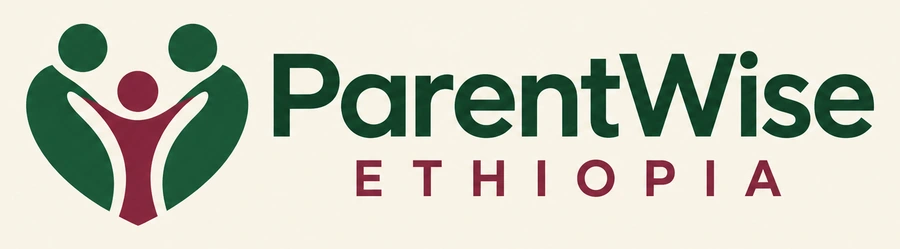

FOUNDER WORKSPACE
Your business, in one place.
Website performance, advertising results, payment review and delivery.
The dashboard build is ready to review. The existing backend must be restored and the database prepared before live analytics and secure sign-in can work.
The preview uses clearly labelled fictional data. Example actions do not verify payments or send files.
Live sign-in will be hosted on the separate secure backend after it is restored. No passwords or customer records are stored on this page.
← Back to the website